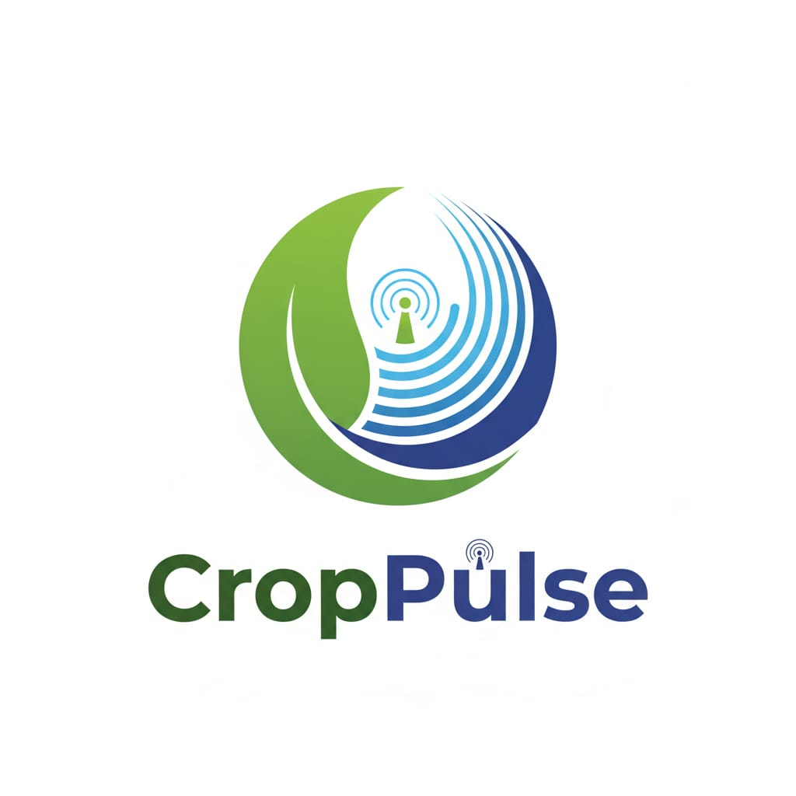

Map the field
Capture an aerial view of the farm and segment it into actionable zones.

CropPulsePrecision agriculture intelligence
CropPulse combines aerial crop intelligence with targeted ground sensing to turn field anomalies into clear, actionable decisions.
CropPulse starts broad with aerial scanning, narrows down the zones that need attention, then sends the rover where ground truth matters. The result is a focused field intelligence loop instead of disconnected sensor readings.
Drone imagery creates a field-wide view and highlights unusual crop patterns.
Capture an aerial view of the farm and segment it into actionable zones.
Surface low-vigor, water-stress and pest-risk patterns so the farmer sees where attention is needed.
Dispatch the rover to targeted zones for moisture, pH and other ground measurements.
Turn the evidence into recommendations, then compare the next scan against the baseline.
Not another wall of dashboards. CropPulse organizes complex sensing into a simple sequence: what changed, where it changed, why it matters, and what to check next.
Aerial RGB mapping gives a fast field-wide picture and identifies zones worth investigating.
Ground measurements validate the exact zones flagged by aerial analysis instead of scanning blindly.
Translate crop health, soil signals and pest risk into clear priority recommendations.
Instead of giving you a single field-wide score, CropPulse breaks the farm into zones. Click a zone, inspect its signals, and decide whether it needs a rover visit, irrigation check, pest verification or another scan.
READY TO SEE YOUR FIELD DIFFERENTLY?
Build your CropPulse workspace and move from field data to targeted decisions.